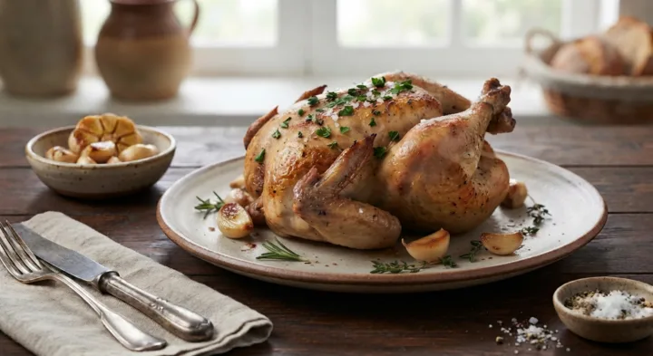
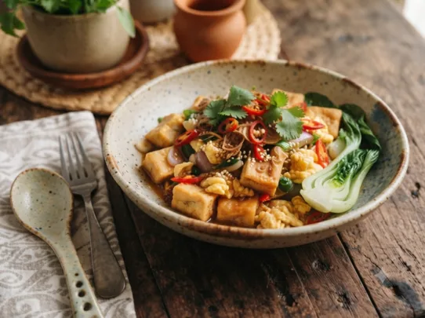
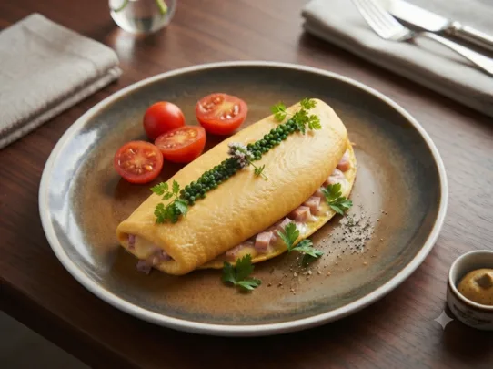
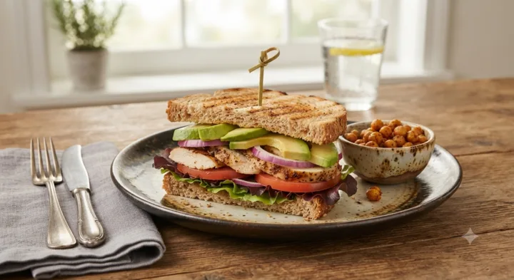
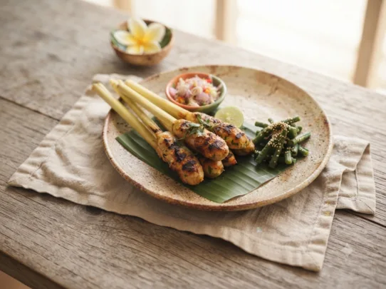

Pilihan Bahan
Rekomendasi Resep
Pilih bahan untuk menyaring rekomendasi resep

Ayam Panggang Bawang Putih
Daging AyamBawang PutihMentega
local_fire_department119 kkaltimer25 Menitrestaurant1 Porsi
Lihat resep

Tumis Telur Tahu
TelurTahuCabai
local_fire_department119 kkaltimer25 Menitrestaurant1 Porsi
Lihat resep
Sup Ayam Tahu
TahuDaging AyamWortel
local_fire_department119 kkaltimer25 Menitrestaurant1 Porsi
Lihat resep

Omelet Panggang
TelurDaging AyamTomat
local_fire_department119 kkaltimer25 Menitrestaurant1 Porsi
Lihat resep

Sandwich Ayam Panggang Alpukat
Daging AyamAlpukatRoti Gandum
local_fire_department119 kkaltimer25 Menitrestaurant1 Porsi
Lihat resep

Sate Lilit Ayam
Daging AyamBawang MerahCabai
local_fire_department119 kkaltimer25 Menitrestaurant1 Porsi
Lihat resep
Belum ada resep yang cocok. Kurangi pilihan bahan atau coba bahan
lain.